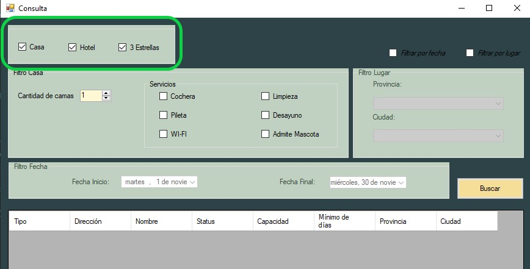
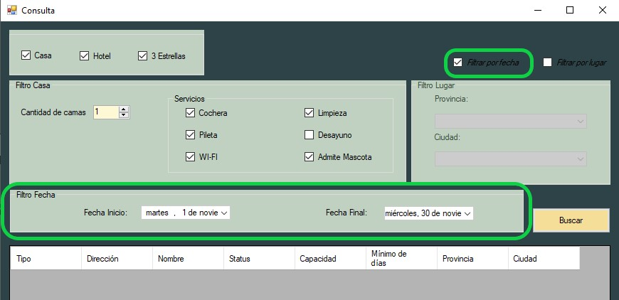
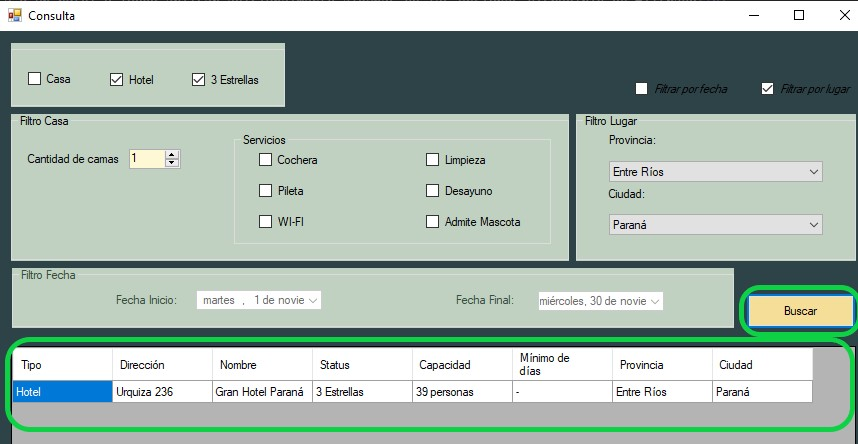
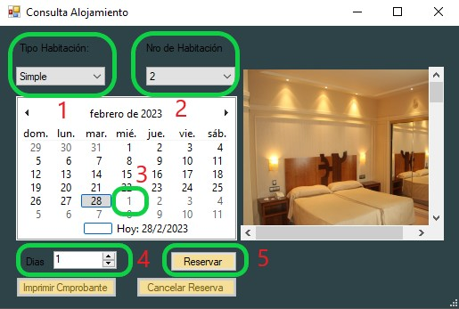

Para comenzar al generacion de una puede utilizar el boton "Agregar Reserva"
Tambien puede navegar por el menu desplegable y elegir la opcion "Reservas" y luego "Agregar" o precionar "Alt+"A

A continuacion se desplegara la ventana "Consulta" en la cual podra utilizar filtros para encontrar los alojamientos deseados
En esta ventana usted podra seleccionar entre una casa o un hotel y luego aplicar adicionalmente algunas de las opciones disponible de filtrado
Filtro Casa/Hotel:
La primera opcion de filtrado es seleccionar un casa o un hotel para la busqueda del alojamiento sobre el que se creara la reserva
Si la opcion es un hotel, adicionalmente podra tildar el campo "3 Estrellas" para espesificar esta caracteristica en el hotel a buscar
Filtro Casa:
Si su eleccion previa fue una casa, podra hacer uso del apartado "Filtro Casa" para espesificar los servicios y el minimo de dias para la propiedad
Filtro por Fecha:
Tildando la opcion "Filtro por fecha", podra discriminar los alojamientos que no tengan disponibilidad en el rango de fechas que usted elija
Para seleccionar las fecha puede utilar los controles "Fecha inicio" y "Fecha inicio" de este apartado
Filtro por Lugar:
Tildando la opcion "Filtro por Lugar", podra discriminar los alojamientos que no se encuentren en la provincia y ciudad seleccionadas
El campo "Ciudad" se habilitara si hay alojamientos registrados en la provincia seleccionada, y se completara con las ciudades de los alojamientos existentes para dicha provincia

Una vez comletado el filtrado, presionando el boton "Buscar", se llenara la lista posterior con los alojamientos que cumplen con los requisitos
Luego, presionando doble click sobre la linea en la que se encuentra el alojamiento deseado se desplegara la ventana de "Consulta Alojamiento" para ver disponibilidad de dicho alojamiento
Consulta para Casa:
En el caso de una casa, no es necesario seleccionar tipo de habitacion y numero de habitacion, estas opciones figuran como desactivadas en la ventana
Por lo contrario, si se debera fijar el dia de inicio de la estadia usando el calendario de la ventana y el numero de dias que durara la misma usando el control "Dias"
El control "Dias" esta fijado por defecto con un minimo de dias en relacion a lo que la propiedad permite

Si el rango de fechas seleccionado es correcto se desplegara una ventana para el ingreso de datos de los ocupantes de la Casa en dicha reserva
Una vez ingresados los datos la reserva sera creada y se desplegara una ventana que contiene un comprobante
En esta ventana se puede utilizar el boton "Imprimir" para realizar una impresion del comprobante
Consulta para Hotel:
En el caso de un Hotel, es necesario seleccionar tipo de habitacion, que puede ser "Simple", "Doble" o "Triple", y ademas un numero para la misma
Ademas, se debera fijar el dia de inicio de la estadia usando el calendario de la ventana y el numero de dias que durara la misma usando el control "Dias"
Si el rango de fechas seleccionado es correcto se desplegara una ventana para el ingreso de datos de los ocupantes de la Habitacion en dicha reserva
Una vez ingresados los datos la reserva sera creada y se desplegara una ventana que contiene un comprobante
En esta ventana se puede utilizar el boton "Imprimir" para realizar una impresion del comprobante